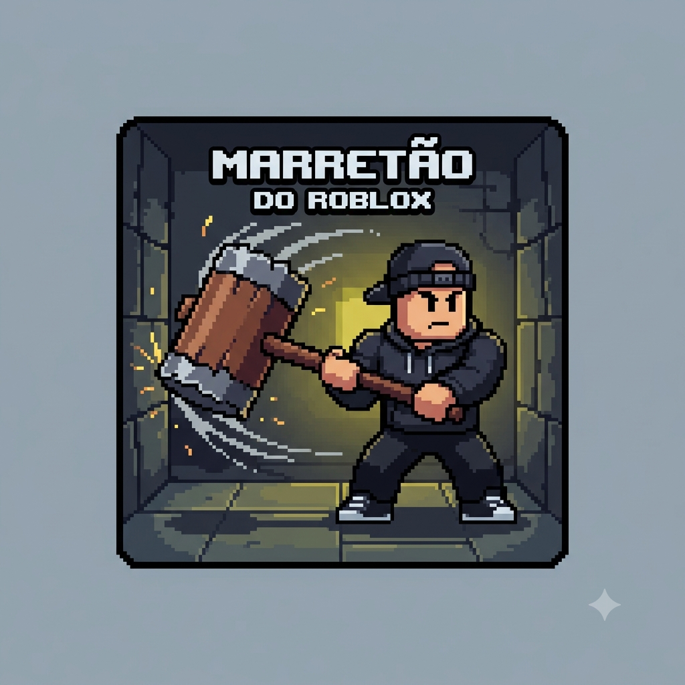
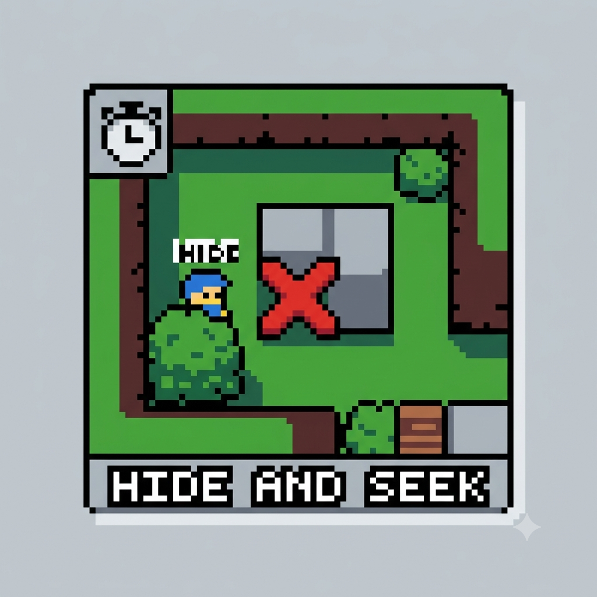

Meu Primeiro Post
Boas Vindas ao meu primeiro blog! Aqui vou compartilhar algumas dicas de jogos de roblox e curiosidades
Blog de aventuras desbravando os jogos do roblox
Boas Vindas ao meu primeiro blog! Aqui vou compartilhar algumas dicas de jogos de roblox e curiosidades

Por:ester fogliatto
Nessa Postagem estarei falando sobre roblox veja oque eu ja fiz abaixo

Jogando marretão
Por:Ester Fogliatto
Por que jogar marreão. Ele é um jogo interativo em que você pode se divertir com seus amigos e alem de ser um jogo livre para todas as idades
Fonte: Roblox – Códigos para o Flee the Facility (julho 2023)

Porque jogar Bedwars
Por: Ester Fogliatto
Bedwars foi um dos primeiros jogos inspirados em Minecraft lançado no Roblox e isso mostra a diversidade de cultura e jogos presentes

Jogado hide and seek
Por: Ester Fogliatto
Hide And Seek é um dos jogos mais antigos e divertidos do Roblox onde seu jogo é divertido e promove muitas risadas e diversões

Hoje jogaremos o Jogo Dress to Impress
Por:Ester fogliatto
esse jogo é diversificado e ótimo para aqueles que curtem jogos de roupas e estilização delas super recomendo além de ser livre para todas as idades também